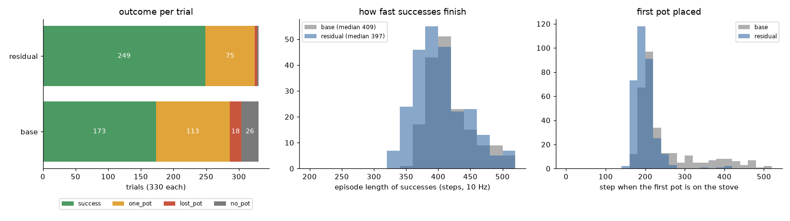
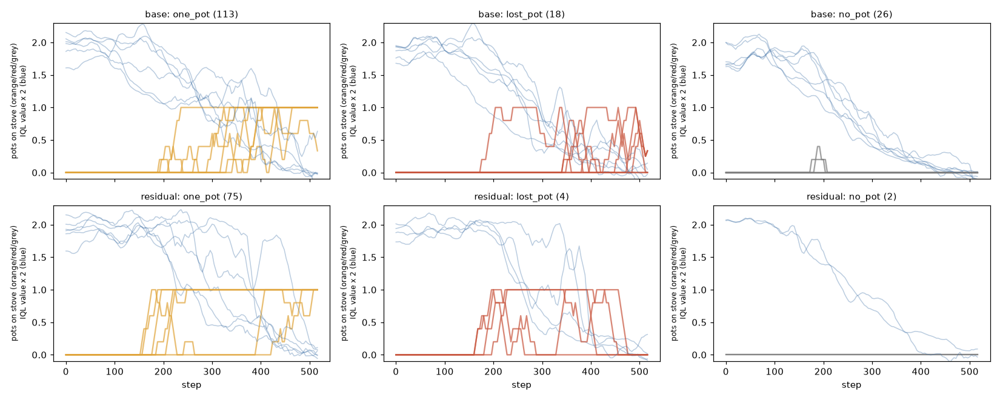

Moka pots: base π0.5 vs advantage-guidance residual
LIBERO-10 task 8, 10 held-out val states x 33 trials, same trials and sampling noise for both policies (base eval 18355478, residual eval 18438187, 2026-11-11). Failure types from the agentview video with a pot-on-stove detector (frame accuracy 94% on 120 rollouts with recorded sim state, 93% on their failures' end states).
| outcome | base | residual |
|---|---|---|
| success (both pots on the stove) | 173 | 249 |
| failed with one pot on the stove | 113 | 75 |
| failed after a placed pot came off | 18 | 4 |
| failed without placing any pot | 26 | 2 |
- The residual fixes 113 of base's failures and breaks 37 of its successes (35 of those end with one pot on).
- Almost every remaining failure has the first pot on the stove: the second pot is what is left to fix.
- Faster: successes median 409 vs 397 steps; on the 136 trials both solve, the residual is -12.3 steps [-20.6, -3.9]. First pot on the stove: median step 208 vs 192, and base's long tail of late first pots (steps 270-520) is gone.

